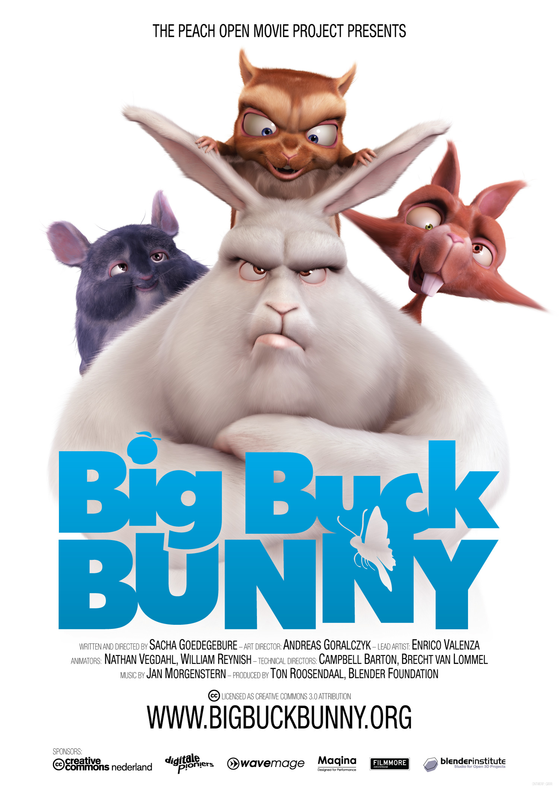

Casting from the phone to a Chromecast
One architectural fact decides almost every frame in this document: the receiver is its own Ravilo device, not a screen the phone drives. It holds its own device token, runs its own heartbeats, advances to the next episode and honours Skip Intro by itself. So the phone is a remote in the literal sense — it can die, and the TV keeps playing.
| Settled before any design | Consequence for these frames |
|---|---|
| The TV keeps playing if the phone dies | The remote is never the source of truth. On app start it rebuilds from the receiver — item, position, tracks, next-up — never from anything the phone remembered. That is why re-connect is a first-class screen and not an edge case. |
| Re-connect has two outcomes, and one of them is silence | Cast still running → the mini bar appears with the live position. Receiver finished or gone → nothing is shown and no error is raised; the viewer casts again with one tap. An "your cast ended" toast would be noise about something they already know. |
| The cast button is server-pushed | It exists only when the server says Chromecast is set up. Absent, never greyed — a disabled control is a promise you are not keeping. Off in Settings ⇒ the phone is told there is nothing to cast to and never guesses. |
| The receiver appears in Users & devices | It enrols with a hand-off code and gets its own row, so phase 110 gives it a named Jellyfin session — which is why "control the pause from the Jellyfin dashboard" already works once this exists. Nothing on the phone implements it. |
| Every cast is a Jellyfin encode | A Cast receiver never direct-plays MKV. So R222's slow-to-start note, R218's waiting states and R182's busy state all apply to casting, and the remote has to hold them — three of its seven states. The viewer is still never told why. |
From "I want this on the TV" to "the TV is playing it"
Starting a cast has to be super simple and fast: the cast icon is on every app bar, one tap opens the system picker, and pressing Play while connected casts instead of playing locally. No interstitial, no setup step, no connecting screen that owns the view.
| # | Step |
|---|---|
| 1 | The cast icon, on every app bar — Home, Detail, Player. Three states: idle outline · connecting (bars fill in sequence) · connected (filled, accent-tinted). Absent entirely when Chromecast is off server-side. |
| 2 | The system picker — one tap. This dialog belongs to the platform on both Android and iOS; we draw the frame around it and leave it alone. |
| 3 | Connecting — a thin bar under the app bar, nothing more. "Connecting to Living room TV…" becomes "Casting to Living room TV" and retires after ~2 s. The app stays usable throughout. |
| 4 | Play casts — the detail screen's primary action reads Play on Living room TV. The position goes with it, the phone stops playing locally, and the remote opens. |
| 5 | Re-connect — app opened cold with a cast running: the icon animates and one bar reads "Reconnecting to Living room TV…". A requirement, not a nicety. |
| 6 | Outcome A — still playing: the mini bar appears with the live position; one tap opens the remote. This is also brief §B3, i.e. what casting looks like from every other screen. |
| 7 | Outcome B — finished or gone: nothing. No bar, no toast, no error; the cast icon is idle again and that is the whole message. |
| 8 | Stop casting — from the remote's footer or the cast icon. No confirmation dialog; it is one tap to start again. The TV returns to its idle screen. |
| 9 | Lock screen (§B4) — the Cast SDK's own notification, so the layout is the platform's. Ours is the artwork crop (landscape still, not poster — a poster crops to nothing at 64 px) and the second line, which carries the device name. |
Outcome A · the mini bar, §B3


Two directions, one axis: is the artwork the screen, or a card on it? Chosen: 2
1 · Cinema

2 · Now playing — CHOSEN
| Axis | 1 · Cinema | 2 · Now playing |
|---|---|---|
| Needs a backdrop | Yes — it is the design. Without one: a gradient wash behind centred text. | No. A 16:9 card that falls back to a wordmark tile, the rule R243's taxonomy walls already use. |
| Text contrast | White on a scrimmed photo. Passes on some titles, fails on others — and you cannot know which. | Ink on a solid surface. Always ≥ 4.5:1, by construction. |
| "Which TV?" | A centred chip, decorative. | A chip in the header that is also the control: tap to switch device or stop. |
| Stop casting | Third item in the footer, same weight as Next episode. | Footer and header chip — two routes, because it is the one action people hunt for. |
| Feels like | A film, paused. | A remote control. Which is what it is. |
| Noir | Two overrides: accent wash suppressed, scrim deepened. | One: the kicker loses its accent tint (R221 precedent). |
The seven states the remote has to hold
| State | What changes | Why it is drawn |
|---|---|---|
| 1 · Playing | The default. Position ticks from the receiver's own reports, never from a local clock. | Because the phone is not the source of truth, the position has to be visibly borrowed. |
| 2 · Paused | Play glyph; the art card dims slightly. | So the state is legible without reading a button. |
| 3 · Buffering on the TV | R218 moment C, borrowed: the spinner stands in for the play button, and a small spinner sits over the art. | The phone is fine; the TV is waiting. No explanation, because the viewer cannot act on one. |
| 4 · Next-up, mirrored | Countdown, Play now, Cancel, and a line saying the receiver owns the countdown. | The clearest demonstration in the whole design that the TV is not being driven by the phone — and the reason cancelling has to be sent, not assumed. |
| 5 · Receiver unreachable | "Lost contact with Living room TV" · "It may still be playing. Ravilo cannot reach it to check." One action: Try again. Transport greyed. | Greying the transport is the honest move: pressing it would be a lie. And the copy claims only what is known. |
| 6 · Server busy | Phase 182's 503 → "The server is busy right now. It will start as soon as it can." plus the elapsed wait. | The one state with a number in it. A wait whose length you can see is a different experience from one you cannot. Still no cause, still no product named. |
| 7 · Ended | "You finished Season 2" · Watch it again / Back to Ravilo, and a note that the receiver has returned to idle. | Nothing auto-plays after a season's last episode, on the TV app or here. Saying so closes the loop rather than leaving a dead remote. |
Changing subtitles from the remote
Drawn as state 8 on the canvas. Subtitles & audio opens the same sheet as the local player — R180/R195's two-level flag-forward picker, one component, two destinations — except the choice is applied on the TV, and one line says so. Subtitle size is the same S · M · L, which is why that row lives in the picker rather than anywhere else. One tap from the remote; no trip back into the app.
Skins and languages
The recommended remote is drawn in Midnight and Noir on the canvas, and once on an iPhone in Føroyskt. Noir needs exactly one override — the kicker loses its accent tint, per the R221/R222 precedent. Fourteen new strings × en/da/fo are tabled on the canvas; the Danish and Faroese are drafts and the app's own strings win where one already exists.
What is deliberately absent
- No AirPlay affordance, anywhere, ever.
- No device picker of our own — redesigning the platform dialog would be a lie about what ships.
- No on-screen volume slider.
- No Cast Connect — a later phase, once the Android TV activity can be a receiver.
- No "Play on Stue TV" — phase 111's own feature, and a decision on the last page.
What the TV shows while it is being cast to
1 · idle

4 · paused or seeked — overlay for ~3 s
Chikhai Bardo
It runs on anything from a 2013 stick to a Cast-enabled TV, so it stays light and assumes no codec — it probes what it can display and lets jellystructure negotiate. Nothing here is interactive: there is no remote pointed at it, so every screen is one overlay or one sentence, and every one is a state the phone has an answer for.
| Screen | What is on it |
|---|---|
| 1 · idle | Black, the lit mark, "Ready to play from your phone". Not a carousel, not a screensaver, not library artwork — a Chromecast idles for hours and a 1st-gen stick has very little memory. |
| 2 · loading | R218 moment B verbatim: pulse, kicker + title, sweep, "Loading…". |
| 3 · playing | Video only. There is no chrome to "show" because nothing can focus it. |
| 4 · paused / seeked | A low overlay for ~3 s: kicker + title, progress, time, ❚❚ glyph. Then gone. |
| 5 · buffering | R218 moment C treatment — frozen frame, overlay up, spinner in the glyph's place. |
| 6 · subtitles | The TV's own caption style (R110 white, black outline). Size S/M/L comes from the phone. |
| 7 · next-up | The countdown card as on the TV app. The receiver runs it; the phone mirrors it. |
| 8 · can't reach the server | "Can't reach your Ravilo server" · "Check that the server is on and try again from your phone." |
| 9 · server busy | "The server is busy right now" · "It will start as soon as it can." plus the elapsed wait. |
| 10 · ended | Straight back to idle. |
Settings → Chromecast, in three states
The card is the registration. jellystructure hosts the receiver at /cast/ and each installation registers its own Cast application with Google — the owner's explicit decision, not a cost to route around.
A · off (the default)
Chromecast
RaviloenableB · on, not registered yet
Chromecast
Ravilonot finishedenableRegister an application at the Google Cast Developer Console. Google charges a one-time US$5 developer fee. Nothing else in Ravilo costs money.
Choose Custom Receiver and paste the address above.
Add your Chromecast as a test device, or publish the application so any Chromecast can use it.
C · registered and verified
Chromecast
RaviloworkingenableNine decisions, all settled
1 · Which remote
Ink never sits on a picture; the device chip is both "which TV" and how you stop; it degrades to a wordmark with no redraw.
2 · Where the card lives
It is a connection to a thing outside jellystructure, so it sits with the others.
3 · Pre-filled session ceiling
Two. One Jellyfin encode per cast, next to whatever the TVs are already doing; the admin can raise it and the receiver has an honest busy state either way.
4 · Does the mini bar ever dismiss?
No — while a cast runs it is the only route back to the remote, so hiding it would hide the session.
5 · What "Next episode" does
Skips straight to it. A picker in between would be a second decision nobody asked for.
6 · Casting from inside the local player
Swap straight to the remote — the viewer is already holding the thing that now controls it.
7 · "Play on Stue TV" (phase 111)
Drawn beside the cast button in round 2, so the two affordances that compete for the same corner are decided together.
8 · Receiver idle screen
The lit mark and one sentence. A stick idles for hours and a 1st-gen one has very little memory — no clock, no artwork, no carousel.
9 · Does "ended" offer anything?
Two actions — Watch it again and Back to Ravilo. Nothing auto-plays after a season's last episode.
What this round changes about the phasing
The research report proposes phase numbers against 216 / R243. Those were taken the same day by the Discover taxonomy pair, then 217 by the Towo removal. The report says its own numbers must be re-verified; here is the shift, for information only. No spec is written or edited by this round.
| Report says | Actually free | Scope |
|---|---|---|
| 216 + R243 | 218 + R244 | Mobile data policy — Quality on mobile data + Wi-Fi only, and a real MaxStreamingBitrate on cellular. |
| R244 | R245 | Phone player chrome — the player document. |
| R245 | R246 | Playback lifecycle — headset keys, Cast SDK notification. |
| R246 | R247 | Play on a Ravilo TV (phase 111 under device-token auth). |
| 217 + R247 | 219 + R248 | Chromecast — this document. Receiver bundle at /cast/, the Settings card, the receiver, the sender and the remote. |
| R248 → R252 | R249 → R253 | Cast Connect · the phone-wide pass (§D) · iOS bring-up · iOS player (VLCKit) · iOS Cast sender. |
Where the build would land, after the picks
- Player, remote and mini bar → Ravilo Mobile.html and mobile/ravilo-mobile.css, behind the same LocalHandset-shaped switch the code uses, so the TV mockups stay untouched.
- The receiver → a new ravilo/Ravilo Receiver.html at 1920 × 1080, its own file, because nothing about it is a phone.
- The Chromecast card → app/settings.html.
- The iPhone frame is already in Ravilo Mobile.html — a device picker beneath the phone swaps the Pixel 9 bezel for an iPhone 16 with a Dynamic Island and home indicator, and every existing screen renders in both (?dev=ios works too). Nothing else in that file was touched, per the brief.
Also pulled from the repo today
specs/research-reports/ios-build-host-macbook-setup-2026-09-16.md — the companion guide for reaching the MacBook over SSH as a build host. No design work in it; mirrored so this project's specs/ stays an exact copy of the repo's.